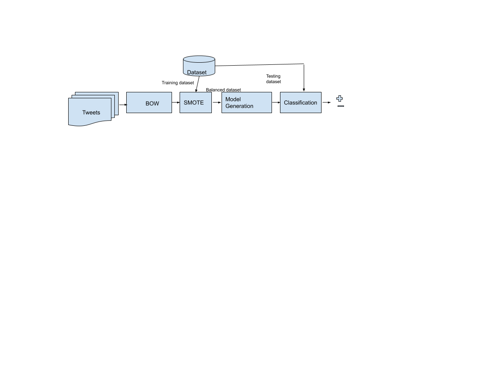

Text classification algorithms have gained high importance among variety of software systems that process text data at scale. Text classification can be categorized as:
Topic classification is categorizing a text document into one of a predefined set of topics. In many topic classification problems, this categorization is based primarily on keywords in the text. SPAM filter, Inappropriate comment detection in discussion forums are two examples of topic classification.
Sentiment analysis (SA) has become a very active research area in natural language processing (NLP) and has attracted increasing interest in data mining, Web mining, and text mining.The goal is to identify the polarity of text content: the type of opinion it expresses. This can take the form of a binary like/dislike rating, or a more granular set of options, such as a star rating from 1 to 5. One example of sentiment analysis include analyzing Twitter posts to analyze hate speech/offensive language in tweets. Sentiment analysis includes several tasks such as opinion extraction,polarity determination, affect analysis, review mining, etc.
Here is the worlflow to solve machine learning problem
Gathering data is the most important step in solving any supervised machine learning problem. Our text classifier can only be as good as the dataset it is built from.
We are tackling a specific problem, we used the positive/negative(Neutral/Hate or offensive language) polarity of the Twitter Tweets dataset. The dataset contains tweets posted by people on Twitter, it is labeled as 0-Hate Speech, 1-Offensive language and 2-Neither.
Understanding the characteristics of our data beforehand enables us:
The key to managing such an exploration is to be organized. Keeping records about the exploration, recording thoughts and ideas along the way, and organizing findings are all important. This is a complex undertaking, though possibly very rewarding.
First up, let’s load the dataset into Python.
After loading the data, it’s good practice to run some checks on it: so pick a few samples and manually check if they are consistent with our expectations. For example, print a few random samples to see if the tweet label corresponds to the tweet.
Once we have verified the data, we collected the following important metrics that can help characterize our text classification problem:
The following table shows the summary of metrics.
| Metric Name | Metric Value |
|---|---|
| Number of samples | 23780 |
| Number of classes | 3 |
| Number of samples per class | 1 - 19190 | 2 - 4163 | 0 - 1430 |
| Number of words | 348721 |
At this point, we have assembled our dataset and gained insights into the key characteristics of our data. Next, based on the metrics we gathered in Step 2, we should think about which classification model we should use. This means/ asking questions such as, “How do we present the text data to an algorithm that expects numeric input?” (this is called data preprocessing and vectorization), “What type of model should we use?”, “What configuration parameters should we use for our model?”, etc.
Given that the best options might not be obvious, a naive solution would be to try every possible option exhaustively, pruning some choices through intuition. However, that would be tremendously expensive.
Our goal is to find the algorithm that achieves close to maximum accuracy while minimizing computation time required for training. We will try to implement diefferent data processing techniques alternating and different model architectures. This will help us identify dataset parameters that influence optimal choices.
Below is the summary of our model selection algorithm
For this particular data set, our text cleaning step includes : HTML decoding, remove stop words, change text to lower case, remove punctuation, remove bad characters, and so on.
During the data exploration we found two major issues:
To overcome multiple class issue we transformed the classes to Binary classes.Combining Hate Speech and Offensive language as 0 and Neither as 1 . Below table shows the binary classification data distribution.
| Class | Tweets |
| 0- Hate Speech | 1430 |
| 1- Offensive Language | 19190 |
| 2-Offensive Language | 4163 |
We transformed the classes into binary classes and recorded the results as follows:
| Class | Tweets |
| 0 - (Hate Speech + Offensive language) | 20620 |
| 1- Neither | 4163 |
Before our data can be fed to a model, it needs to be transformed to a format the model can understand. First, the data samples that we have gathered may be in a specific order. We do not want any information associated with the ordering of samples to influence the relationship between texts and labels. For example, if a dataset is sorted by class and is then split into training/validation sets, these sets will not be representative of the overall distribution of data. A simple best practice to ensure the model is not affected by data order is to always shuffle the data before doing anything else.
Before training, and even vectorizing, let's split our data into training and testing sets. It's important to do this before doing anything with the data so we have a fresh test set.
Second, machine learning algorithms take numbers as inputs. This means that we will need to convert the texts into numerical vectors. There are three steps to this process:
We call vectorization the general process of turning a collection of text documents into numerical feature vectors. This specific strategy (tokenization, counting and normalization) is called the Bag of Words or “Bag of n-grams” representation. Documents are described by word occurrences while completely ignoring the relative position information of the words in the document.
This representation is used in conjunction with models that don’t take ordering into account, such as logistic regression, multi-layer perceptrons, gradient boosting machines, support vector machines.
Word counts are a good starting point, but are very basic. One issue with simple counts is that some words like “the” will appear many times and their large counts will not be very meaningful in the encoded vectors. An alternative is to calculate word frequencies, and by far the most popular method is called TF-IDF. This is an acronym than stands for “Term Frequency – Inverse Document” Frequency which are the components of the resulting scores assigned to each word.
Term Frequency: This summarizes how often a given word appears within a document. Inverse Document Frequency: This downscales words that appear a lot across documents. Without going into the math, TF-IDF are word frequency scores that try to highlight words that are more interesting, e.g. frequent in a document but not across documents.
The TfidfVectorizer will tokenize documents, learn the vocabulary and inverse document frequency weightings, and allow you to encode new documents. Alternately, if you already have a learned CountVectorizer, you can use it with a TfidfTransformer to just calculate the inverse document frequencies and start encoding documents.The same create, fit, and transform process is used as with the CountVectorize
Word2vec is a two-layer neural net that processes text. Its input is a text corpus and its output is a set of vectors: feature vectors for words in that corpus. While Word2vec is not a deep neural network, it turns text into a numerical form that deep nets can understand.
| Representation | Results |
| BOW | array([[0, 0, 0, ..., 0, 0, 0], [0, 0, 0, ..., 0, 0, 0], [0, 0, 0, ..., 0, 0, 0], ..., [0, 0, 0, ..., 0, 0, 0], [0, 0, 0, ..., 0, 0, 0], [0, 0, 0, ..., 0, 0, 0]], dtype=int64) class scipy.sparse.csr.csr_matrix |
| Tf–idf term weighting | [ 8.81535838 8.1222112 10.20165274 ... 10.20165274 10.20165274 10.20165274] (1, 26961) [[0. 0. 0. ... 0. 0. 0.]] |
| Word2Vec | ..... |
By calculating if our model only chose to predict 0(hate and offensive language), the larger class, we would get a ~60% accuracy. This means that in our binary classification model, where random chance is 50%, a 60% accuracy wouldn't tell us much. We would definitely want to look at precision and recall more than accuracy. We can balance our data by using a form of oversampling called SMOTE. SMOTE looks at the minor class, neutrals in our case, and creates new, synthetic training examples.
After balancing the data our records: [(0,16516), (1,16516)]
Now our data is cleaned and processed for model input.
We tried different model building approaches:
Fig 1. Model training using Scilkit-Learn Pipe class
In deep learning text classification we followed this approach :
Several ensemble learning techniques are evaluated to generate computational models including: Bagging, Boosting, Voting and Random Forests. We followed these steps for training Ensemble models:
We trained different ensemble clssifiers with these parameters
| Name | Type | Parameters | |
|---|---|---|---|
| clf1 | Gaussian NB (GNB) | Single classifier | |
| clf2 | k-NN | Single classifier | k=5 |
| clf3 | Decision Tree | Single classifier | Gini index, min_sample_split= 2 |
| eclf1 | Random Forest | Ensemble Randomization | n_estimators= 20 |
| eclf2 | Bagging | Ensemble Bagging | Estimator= Decision Tree |
| eclf3 | Boosting | Ensemble Boosting | Estimator= Decision Tree |
| eclf4 | Voting | Ensemble Voting | Estimators= LSVC,RF,LR,NB |